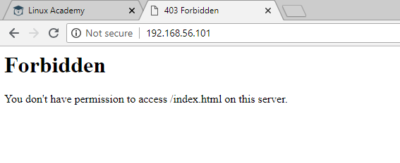

When enabled selinux and every single file, directory have context .. [root@redhat ~]# ls -Z -rw-------. root root system_u:object_r:admin_home_t:s0 anaconda-ks.cfg [root@redhat ~]# Context:- User -u Role -r Type -t We primarily focus on type.Particular program or application need pemission for particular directory or file. Install httpd for exxample :- #yum install -y httpd #systemctl start httpd #systemctl enable httpd Check the status on browser#cd /var/ [root@redhat var]# ls -Z |grep www drwxr-xr-x. root root system_u:object_r:httpd_sys_content_t:s0 www [root@redhat var]# httpd_sys_content_t --> this type represent particular web server need permission to read this directory inorder to website work properly. In-case www have different type and selinux wont allow website to access the www directory. [root@redhat var]# ls -Z |grep www drwxr-xr-x. root root system_u:object_r:httpd_sys_content_t:s0 www [root@redhat var]# cd www [root@redhat www]# ls -Z drwxr-xr-x. root root system_u:object_r:httpd_sys_script_exec_t:s0 cgi-bin drwxr-xr-x. root root system_u:object_r:httpd_sys_content_t:s0 html [root@redhat www]# List of all context and fiel associated with that context.:- #semanage fcontext -l )Fix the context type of the file. [root@uswv1vxap008a ~]# ls -laZ /var/spool/cron drwx------. root root system_u:object_r:user_cron_spool_t:s0 . drwxr-xr-x. root root system_u:object_r:var_spool_t:s0 .. -rw-r--r--. root root system_u:object_r:unlabeled_t:s0 root [root@uswv1vxap008a ~]# semanage fcontext -a -t user_cron_spool_t /var/spool/cron/root [root@uswv1vxap008a ~]# ls -laZ /var/spool/cron drwx------. root root system_u:object_r:user_cron_spool_t:s0 . drwxr-xr-x. root root system_u:object_r:var_spool_t:s0 .. -rw-r--r--. root root system_u:object_r:unlabeled_t:s0 root [root@uswv1vxap008a ~]# more /etc/selinux/targeted/contexts/files/file_contexts.local # This file is auto-generated by libsemanage # Do not edit directly. /var/spool/cron/root system_u:object_r:user_cron_spool_t:s0 [root@uswv1vxap008a ~]# restorecon -v /var/spool/cron/root restorecon reset /var/spool/cron/root context system_u:object_r:unlabeled_t:s0->system_u:object_r:user_cron_spool_t:s0 [root@uswv1vxap008a ~]# ls -laZ /var/spool/cron drwx------. root root system_u:object_r:user_cron_spool_t:s0 . drwxr-xr-x. root root system_u:object_r:var_spool_t:s0 .. -rw-r--r--. root root system_u:object_r:user_cron_spool_t:s0 root [root@uswv1vxap008a ~]# How selinux works :- [root@redhat susi]# pwd /home/susi [root@redhat susi]# ls [root@redhat susi]# touch index.html [root@redhat susi]# ls -l total 0 -rw-r--r--. 1 root root 0 Sep 11 08:21 index.html [root@redhat susi]# ls -Z -rw-r--r--. root root unconfined_u:object_r:user_home_t:s0 index.html [root@redhat susi]# We can see the type is showing user_home_t type context. Move this index.html to /var/www/html [root@redhat susi]# mv index.html /var/www/html/ [root@redhat susi]# cd /var/www/html/ [root@redhat html]# ls -Z -rw-r--r--. root root unconfined_u:object_r:user_home_t:s0 index.html [root@redhat html]# If we try now and showing permission denied..If you give 777 permission also wont work because of selinux.  See process related to httpd showing httpd_t context [root@redhat html]# ps auxZ |grep httpd system_u:system_r:httpd_t:s0 root 1387 0.0 0.5 230376 5164 ? Ss 08:09 0:00 /usr/sbin/httpd -DFOREGROUND system_u:system_r:httpd_t:s0 apache 1388 0.0 0.3 230512 3756 ? S 08:09 0:00 /usr/sbin/httpd -DFOREGROUND system_u:system_r:httpd_t:s0 apache 1389 0.0 0.3 230512 3752 ? S 08:09 0:00 /usr/sbin/httpd -DFOREGROUND system_u:system_r:httpd_t:s0 apache 1390 0.0 0.3 230376 3244 ? S 08:09 0:00 /usr/sbin/httpd -DFOREGROUND system_u:system_r:httpd_t:s0 apache 1391 0.0 0.2 230376 3008 ? S 08:09 0:00 /usr/sbin/httpd -DFOREGROUND system_u:system_r:httpd_t:s0 apache 1392 0.0 0.3 230512 3752 ? S 08:09 0:00 /usr/sbin/httpd -DFOREGROUND system_u:system_r:httpd_t:s0 apache 1439 0.0 0.2 230376 3008 ? S 08:10 0:00 /usr/sbin/httpd -DFOREGROUND system_u:system_r:httpd_t:s0 apache 1440 0.0 0.2 230376 3008 ? S 08:10 0:00 /usr/sbin/httpd -DFOREGROUND system_u:system_r:httpd_t:s0 apache 1441 0.0 0.2 230376 3008 ? S 08:10 0:00 /usr/sbin/httpd -DFOREGROUND unconfined_u:unconfined_r:unconfined_t:s0-s0:c0.c1023 root 1634 0.0 0.0 112704 960 pts/0 R+ 08:26 0:00 grep --color=auto httpd [root@redhat html]# Fix :- [root@redhat html]# semanage fcontext -a -t httpd_sys_content_t /var/www/html/index.html [root@redhat html]# [root@redhat html]# restorecon -Rv /var/www/html/index.html restorecon reset /var/www/html/index.html context unconfined_u:object_r:user_home_t:s0->unconfined_u:object_r:httpd_sys_content_t:s0 [root@redhat html]# Remove context :- #semange fcontext -d /var/www/html/index.html